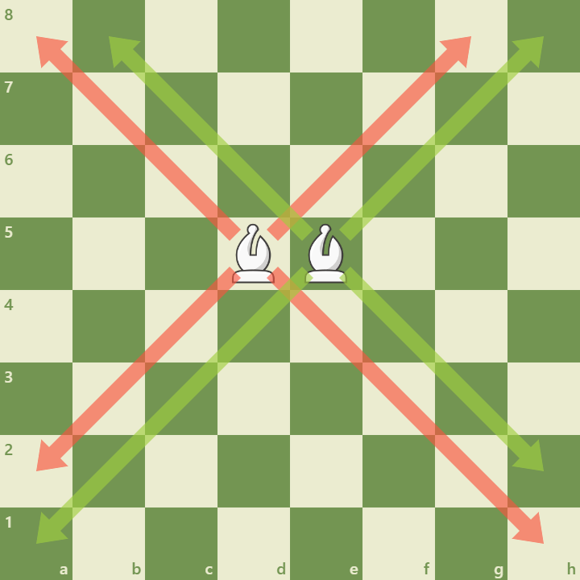

Bishops move diagonally any number of squares and are strong on long diagonals, especially in open positions.
Key Characteristics:

Movement Diagonal only; each bishop remains on its color for the whole game. Pair Value Two bishops often outvalue a bishop and knight in open positions.
Strategic Importance:
Diagonals Control long diagonals to pressure the enemy camp.
Color Complexes Bishops exploit weaknesses on squares of their color.
Endgames Bishop vs knight endgames depend on pawn structure and open lines.
Maintaining bishop activity and avoiding blockages are key to maximizing their potential.